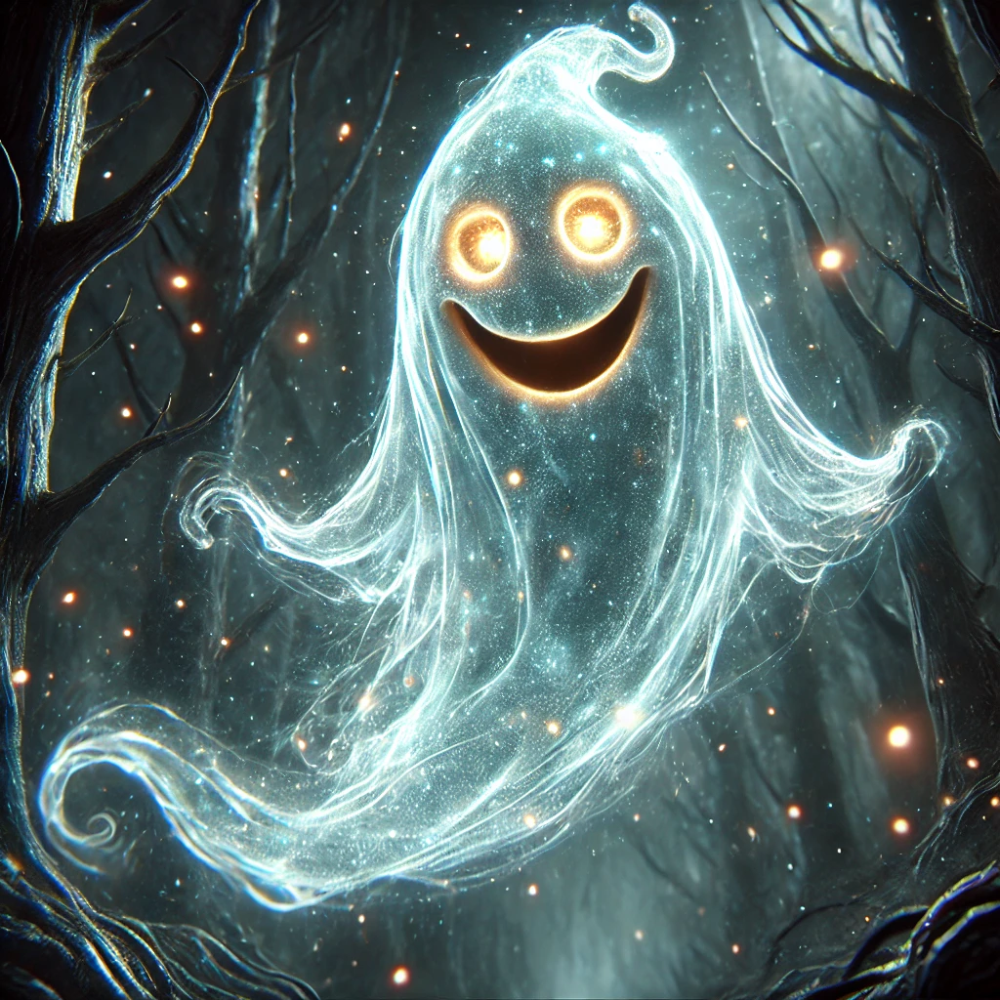
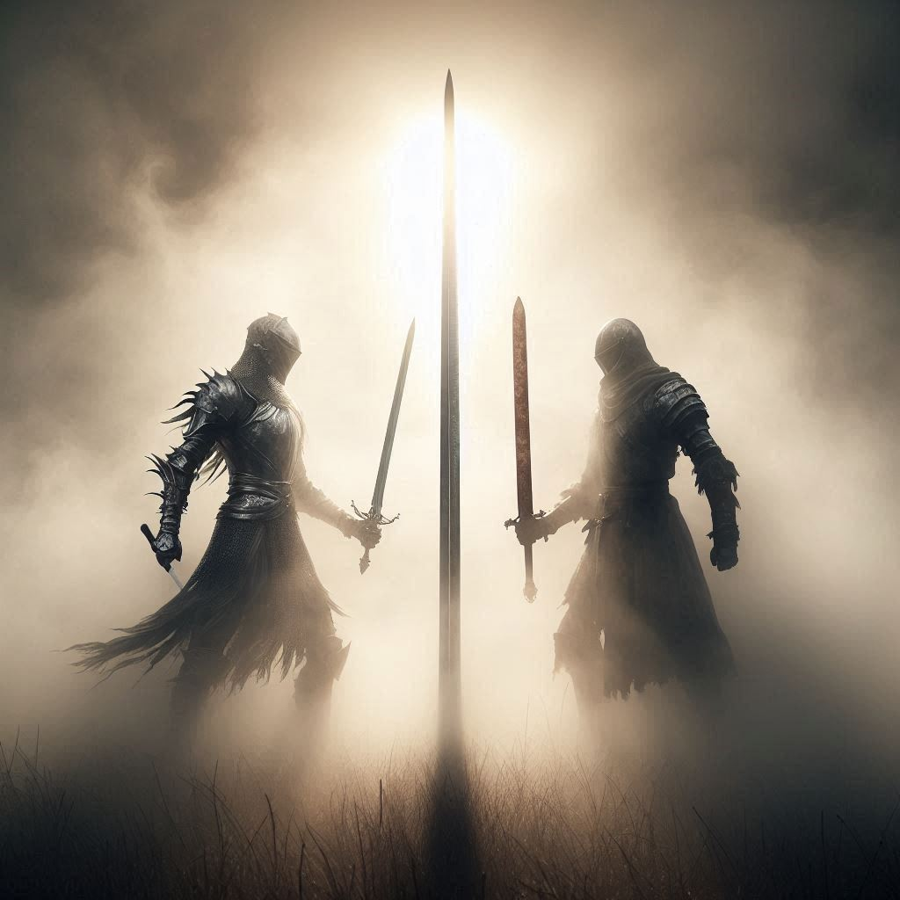

The world around you shimmers as you make your choice. The other paths fade away, leaving only a narrow, winding trail ahead—dark, mysterious, and just the right amount of eerie. You take a deep breath.
Alright, Mystic Forest it is. Maybe I’ll stumble upon something great—like Little Red Riding Hood, or the house where Goldilocks had her infamous trespassing incident. That would be fun. But… how do I actually get there? I don’t want to walk.
As if on cue, a rhythmic clop-clop-clop echoes from the distance. You turn your head just in time to see a horse trotting toward you, looking oddly determined.
He stops right in front of you, tilts his head, and—oh, good. The horse can talk. Because why wouldn’t it?
Hey there, Mr. Janitor. Are you on your way to save us all? I can't stand those flying cars taking away all my customers.
Wait, you know me? Seems like I’m getting famous around here. But—hold on, what customers?
I used to be the best riding horse around. Until those evil flying cars showed up and ruined my business. People used to love riding horses. Now? They just hop into their little metal boxes and whoosh—off they go!
The horse dramatically mimics a car zooming past.
Sounds rough. But hey, if you’re a riding horse, I could really use a ride. I can pay you.
Pay me? PAY ME?! Hah! My dear janitor, I don’t need your money. I need justice! And since you seem to be on some grand quest, I’ll consider this public service.
He gestures gallantly with his hoof.
Hop on, tell me the path, and let’s ride!
You shrug, mount the horse, and point down the eerie path ahead.
Straight into the Mystic Woods!
With that, the horse gallops forward, carrying you into the depths of the twisting, whispering forest. At first, the ride is smooth. The trees rustle as if watching you, but nothing seems too unusual. Then, slowly, the forest starts to shift.
The trees stretch, twist, and rearrange themselves when you’re not looking. Paths appear and disappear. Shadows dart between the branches. Within minutes, you're completely, utterly lost.
(Slowing down) So… uh, which way were we going?
I don’t know, man—I mean, horse. The woods are really living up to their name. The trees are moving, the paths keep shifting… I’m pretty sure we’ve passed that same weirdly-shaped rock three times now.
The horse sighs.
Great. Stuck in a mysterious forest. And I bet none of those flying cars have to deal with this.
Before you can respond, a shrill laugh echoes through the trees. It bounces from branch to branch, making it impossible to tell where it’s coming from.
Uh… was that you?
Do I look like I’d laugh like that?
Before you can argue, a shimmering, ghostly figure materializes in front of you. It hovers, grinning mischievously, eyes glowing like tiny lanterns.

Ah-ha! A lost traveler and his trusty steed! You know what that means?
Uh… free maps?
No, fool! It means a test. One question and a single chance. Answer correctly, and I shall grant you safe passage. Answer wrongly… and I shall haunt you forever!
The wind howls dramatically as if nature itself is in on the joke.
Okay, buddy. No pressure, but I really don’t want to deal with ghostly whispers in my ears for eternity.
Fine, let’s hear it. But no spoilers if I’ve heard this one before.
The ghost clears his throat—or whatever ghosts do—conjuring a swirling mist, and in the mist, you see vague images—figures moving, voices whispering. The scene begins to take shape.

The mist solidifies into an image of two warriors, standing on opposite sides of a battlefield. One wields a gleaming silver sword, reflecting the sunlight so brightly it almost blinds you. The other wields a dull, rusted blade, worn from years of battle.
(narrating) Two warriors face each other. One with a blade of the finest silver, untarnished, unbroken, never used. The other wields a blade old and chipped, one that has fought countless battles and tasted victory and defeat alike.
The ghost's voice turns deep and mysterious.
Now tell me, traveler... Between these two warriors, who is the stronger one?
You stare at the swirling mist, watching the warriors remain frozen in their standoff. The forest holds its breath. Even the horse seems interested—though he might just be trying to avoid making eye contact with the ghost.
Alright, let me think…
Before you can answer, the ghost suddenly says,
Oh, by the way, I’ll need to stay with you both. So, excuse me—
Before either of you can react, the ghost dives straight into the horse’s body. The horse shudders, eyes bulging. Then—horrifyingly—his nostrils stretch like rubber, and the ghost’s face pops out from them.
(now with a ghostly nose-extension) Well, this is awkward. I don’t like it.
OH NO. WHY. WHY WOULD YOU DO THAT?!
(grinning through the horse's nostrils) Well, now we’re all one happy traveling party! Answer my question first, then we shall proceed!
The ghost, still protruding from the horse’s nostrils, grins widely, waiting for your answer. The horse snorts, trying to shake the ghost out, but the ghost holds firm.
(thinking) Okay, let’s break this down. This ghost clearly has too much free time. The horse is being haunted by his nostrils, and I’m standing in a shape-shifting forest discussing weird tales. How did my life come to this?
Neither is the strongest.
The ghost narrows his eyes.
Explain yourself, .
Strength isn’t just about the weapon you wield. It’s about the heart, the mind, and the choices you make. A shiny sword doesn’t guarantee victory, and an old blade can’t fight if the warrior lacks will. True strength comes from within.
The ghost gasps so loudly that a few nearby trees shake. The mist dissolves instantly.
BY THE GREAT SPIRITS OF THE AFTERLIFE—YOU HAVE BESTED ME!
Lightning crackles overhead. The forest rumbles. The horse flinches.
Okay, I swear if another ghost tries to live in my nose, I’m retiring.
But instead of looking defeated, the ghost beams at you. He hovers closer and places a hand over his chest in an oddly noble gesture.
Traveler… No, … No, oh Wise One! You have proven your wit and wisdom beyond measure. You shall pass freely through the Mystic Forest.